VSCode
Luban-Lite 支持在 VSCode 环境中完成全流程的开发，包括代码编辑、编译、调试和烧写。VSCode 是一款开源、免费、跨平台的源代码编辑器，由 MicroSoft 开发，特点是轻量级、高性能和可扩展。
插件安装
如需在 VSCode 中进行 C/C++ 语言的调试，必须先安装插件 C/C++，如下所示：
-
在 PC 联网的条件下，直接点击 Install 完成安装，安装完成后的界面示例如下。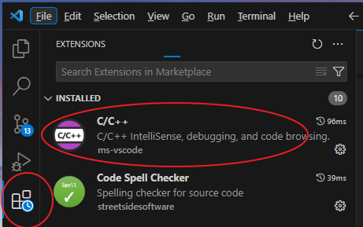
-
在 PC 未联网的条件下，则需要按照以下步骤，手动完成安装：
-
前往 VSCode 官网下载 C/C++ 插件的安装文件。
插件文件的后缀名为 .vsix 。
-
打开 VSCode 终端后，在插件管理界面选择 Install from VSIX，如图所示：
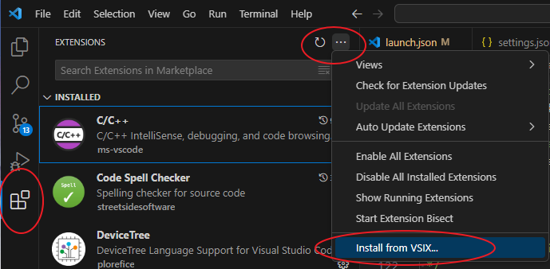 -
打开工程文件
- 选择以下任意方式打开一个文件夹目录：
- 在菜单栏中，选择
- 在 VSCode 的编辑视图中，选择 Start 区域的 Open
Folder...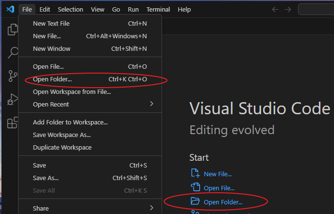
-
在弹出的文件夹浏览窗口中选择 Luban-Lite 根目录，并点击选择文件夹：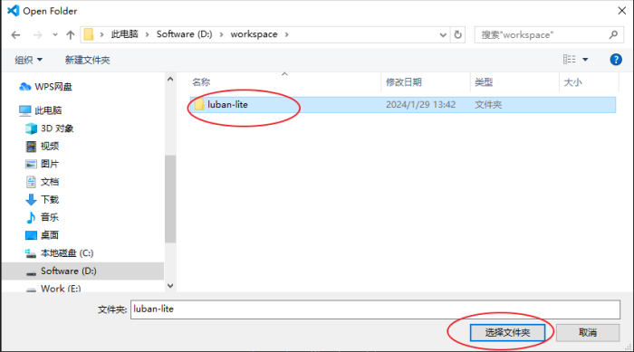
编译
- 在菜单栏选择 打开 VSCode 终端窗口。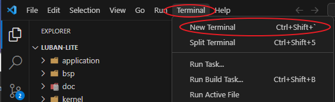
可使用快捷键 Ctrl+Shift+`。
- 在 VSCode 终端窗口中输入并执行 win_cmd.bat。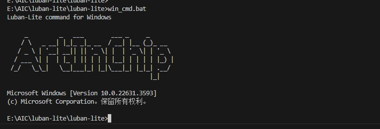
- 使用 list 命令查询所有工程文件，查询结果如下图所示： 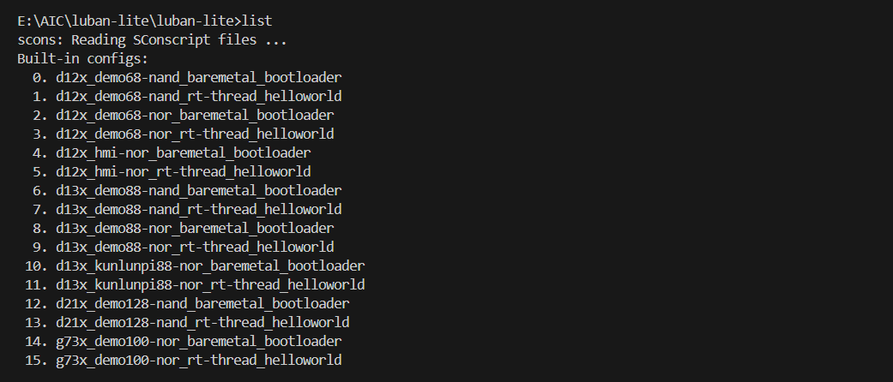
- 选择开发板或者方案所对应的配置编号，执行命令 lunch
list_no.。
例如，当前环境是使用的是 d12x_demo68-nor_rt-thread_helloworld 方案，其配置的编号是3，则执行命令 lunch 3。
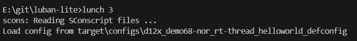
- 使用以下任意一种方式，可以触发编译：
-
在 VSCode 终端中输入 m 命令
-
通过 VSCode 的快捷命令 Ctrl+Shift+B 选择 Luban-Lite make。
-
- 使用以下任意一种方式，可以清除工程：
-
在 VSCode 终端中输入 c 命令。
-
通过 VSCode 的快捷命令 Ctrl+Shift+B，选择 Luban-Lite clean 。
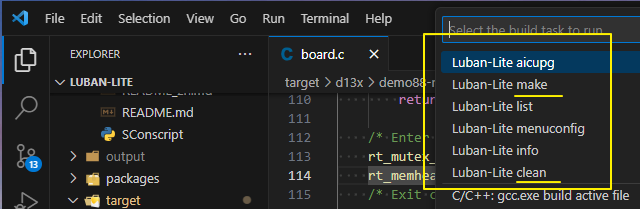
编译成功后的系统输出结果如下所示，表示生成的镜像文件为 luban-lite\output\D12X_demo88-nor_rt-thread_helloworld\images\D12X_demo88-nor_v1.0.0.img：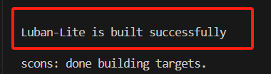
-
烧写
- 打开 VSCode 终端窗口 Terminal，并选择 Run Build
Task：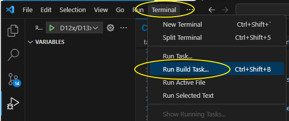
-
在弹出的命令列表中，选择 Luban-Liteaicupg 执行烧写操作。
快捷命令清单
-
aicupg：执行烧写操作
-
make：触发编译
-
list：列出当前所有方案配置
-
menuconfig：打开 menuconfig 配置界面
-
info：查看当前的方案配置
-
clean：清理工程